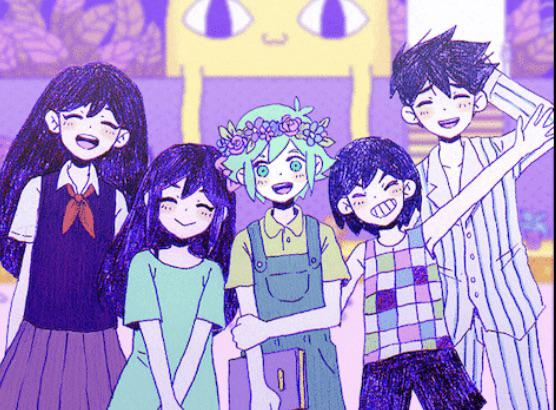
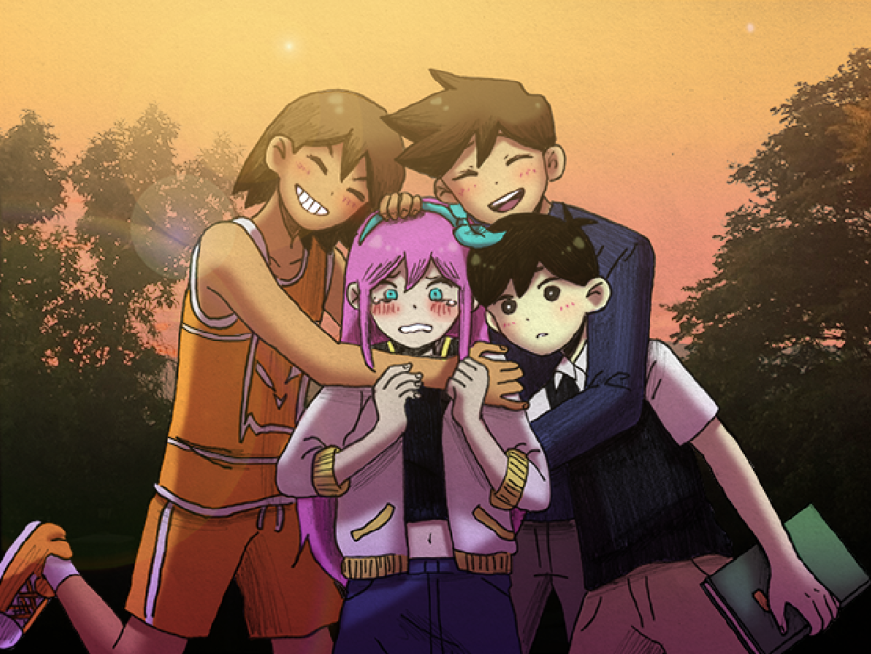
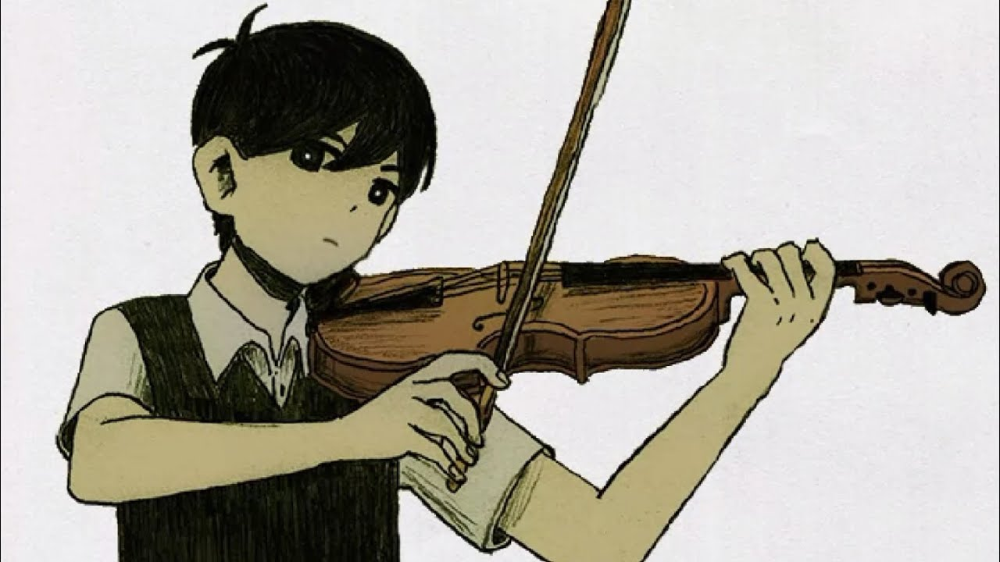
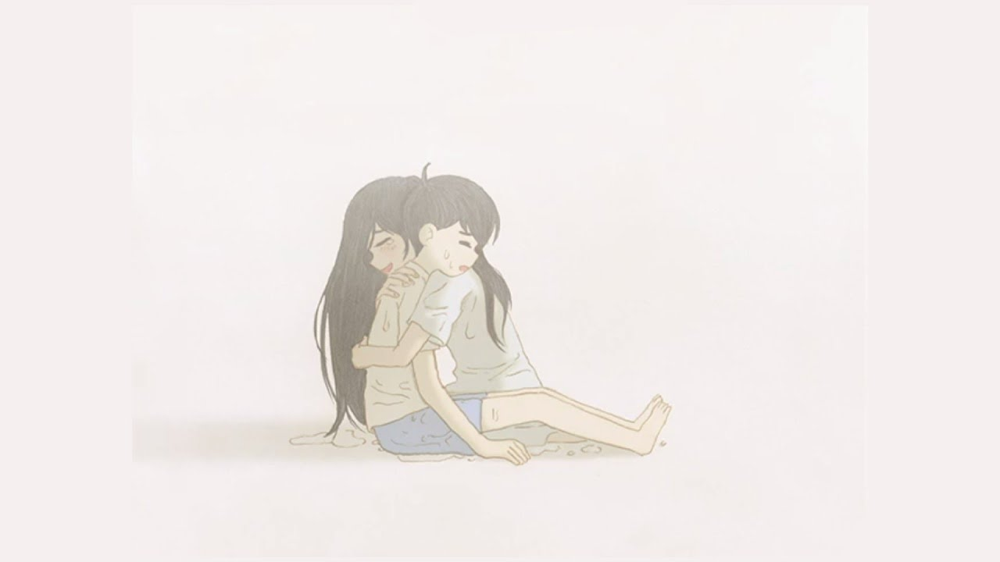

AVISO: Esta sessão está repleta de spoilers do jogo, se pretende joga-lo, não leia.
O jogo começa com Omori. Ele vive em um mundo colorido e peculiar chamado Headspace. Omori tem quatro amigos próximos: Basil, Aubrey, Kel, e Hero. Eles passam o tempo explorando o Headspace, enfrentando monstros e se envolvendo em várias aventuras.

A narrativa é apresentada de duas formas principais: o mundo colorido e onírico do Headspace e a realidade sombria e perturbadora que se revela ao longo do jogo.
Desenvolvimento da História
À medida que o jogo avança, começam a surgir elementos de uma história mais profunda e sombria. Omori e seus amigos encontram Mari, a irmã de Omori que havia morrido em um acidente trágico. A dor e a culpa pela morte de Mari afetam profundamente Omori e sua família.
A história começa a se entrelaçar com Sunny, o verdadeiro nome de Omori. Em contraste com a vivacidade de Headspace, a realidade de Sunny é repleta de tristeza e depressão. Ele vive com seus pais em um ambiente opressivo e solitário. O jogo alterna entre a vivência de Sunny no mundo real e suas aventuras no Headspace, revelando gradualmente como os dois mundos estão conectados, enquanto reencontramos velhos amigos e derrotamos novos inimigos.

Revelações e Clímax
À medida que os eventos se desenrolam, descobrimos que o Headspace é uma criação da mente de Sunny, que está lutando para lidar com a dor da perda de Mari e o trauma associado a isso. O acidente que causou a morte de Mari e o impacto psicológico disso é um tema central. Os amigos de Omori, e até mesmo a própria Mari, são representações dos sentimentos e da culpa de Sunny.
O clímax do jogo ocorre quando Sunny confronta a verdade sobre o acidente e os eventos que levaram à morte de Mari. Ele descobre que foi ele quem, acidentalmente, causou a morte da irmã devido as cobranças dela para que o dueto dos dois fosse perfeito. Essa revelação é dolorosa e leva a um confronto final com seus próprios medos e a necessidade de aceitar a culpa e buscar a cura.

Desfecho
O jogo tem múltiplos finais, dependendo das escolhas do jogador e das ações tomadas ao longo do jogo. Em um dos finais, Sunny confronta seus demônios internos, lida com a dor e culpa e encontra uma forma de aceitar o que aconteceu. Esse final pode oferecer uma sensação de resolução e de paz para Sunny.

Outro final, mais sombrio, pode mostrar Sunny se rendendo à sua dor e recusa em aceitar a realidade. Este desfecho é mais perturbador e revela a profundidade do sofrimento do personagem.
Temas
OMORI explora temas de saúde mental, culpa, perda e a luta para superar o trauma. O jogo combina uma narrativa emocionalmente carregada com um estilo visual encantador, criando uma experiência atraente e que nos faz refletir sobre depressão, perdão e aceitação.
Essa é uma visão geral da história de OMORI. O jogo é rico em detalhes e oferece uma experiência profunda e emocional, então há muito mais para descobrir ao se aventurar pelas suas diferentes rotas e finais.